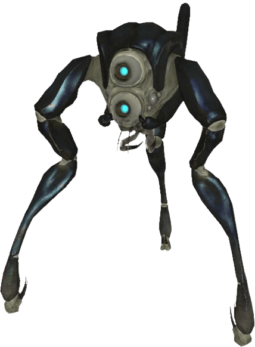
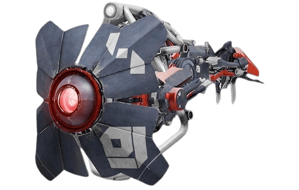
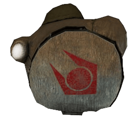
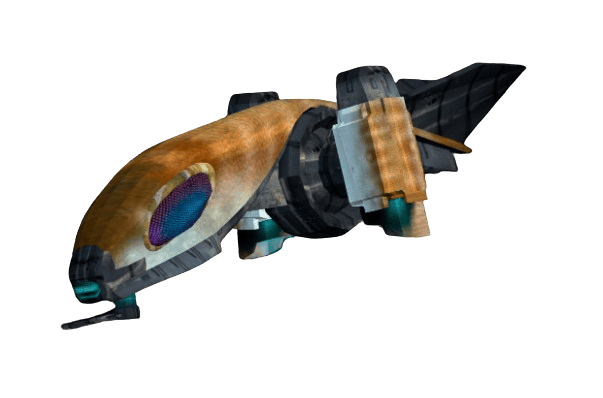

История Подразделения BIO

Подразделение BIO берёт своё начало из старого и закрытого подразделения Контроля над загрязнением, работавшего в разных секторах для подавления инвазивного заражения, вызванного телепортацией флоры и фауны пограничного мира Зен во время портальных штормов.
Небоевое подразделение «Контроля» зачастую почти не имело летального оружия, вследствие чего любое заражение, способное дать отпор, становилось невозможным к зачистке. По причине больших потерь «Контроль» был закрыт, но дорабатывался всё это время.
Теперь Контроль над загрязнением, или служба РХБИЗ Альянса — боевое формирование, чьё предназначение состоит в локализации, изолировании, сдерживании и нейтрализации любых радиологических, химических, биологических, и инвазивных угроз. Форма сотрудников — полностью изолирующий костюм с системой замкнутого дыхания.
Хронология развёртывания
Устав РХБИЗ
1. Отчётность: Сотрудники РХБИЗ обязаны вести регулярную отчётность по шаблону в отведённых каналах пейджера. Длительное отсутствие отчётов наказывается вплоть до ликвидации.
2. Легитимность исследований: Любые научные работы без составленного отчёта считаются нелегитимными.
3. Пропускной режим: Рекрутам строго запрещено пропускать посторонних в лабораторию без надзора офицеров в звании Старшего Лейтенанта и выше.
Позывные личного состава
Все позывные должны соответствовать регламенту Альянса и выбираться в соответствии с научной научной терминологией. Форма: Звание | Позывной
Регламент патрулирования
Сотрудникам РХБИЗ запрещено покидать территорию лаборатории вне плановых патрулей, ЧС, приказов командования от звания CPT и выше или участия в Д№2/5/6 (Д№5 - целью уничтожения ИУ)
Патруль жилого сектора — не менее двух сотрудников (начиная от звания JLT), одиночный патруль разрешен со звания - Лейтенант. Командование — от звания LT и выше
Рекрутам разрешено прибывать вне ЛБ-НН самостоятельно только на территории Нексуса Надзора, самовольное пребвание рекрутов за пределами НН — запрещено
Примечание: Рекрут не может выйти с JLT/LT юнитами за пределы Нексус Надзора вне ЧС/ЧП, выход разрешен лишь совместно с юнитом, имеющим звание LT и выше, или по приказу уполномоченного.
Процесс рекрутирования
Набор из действующих сил Гражданской Обороны. Прошедшие отбор зачисляются на двухнедельный испытательный срок. По окончании — аттестация и распределение.
Оборудование и Вооружение
Каталог и технические регламенты эксплуатации вооружения, систем личной защиты (СЗД), инженерных комплектов и измерительной аппаратуры подразделения BIO.
Основное вооружение и Спецсредства

Устройство Дестабилизации Антропоморфных Видов на основе импульсной технологии Альянса.
Разработан BIO-4 | Плутоний
ИНСТРУКЦИЯ И ОПИСАНИЕ
Использует преобразованную тёмную материю для эффективного разрушения чужеродной органики Зена на клеточном уровне.
- Емкость накопителя: 24 импульса.
- Базовые сплавы: Вольфрам, тантал, платина, сплав V952.
- Эффективность: 98.4% против плотных био-структур.

Тяжелая ранцевая установка для санитарной обработки и термического выжигания био-очагов. Возможна установка других баллонов, например с CO2, для пожаротушения
> С одобрения: Капитан BIO
> Без одобрения: От SLT | ЧС
ИНСТРУКЦИЯ И ОПИСАНИЕ
Параметры: Вес ранца — 38 кг; Устройства Рыспыления с запальником — 13 кг. Реагенты: Чистящий раствор, сжатый азот, аргон.
Порядок применения:
- Проверить герметичность клапанов и плотность фиксации ранцевой сбруи.
- Направить сопло распылителя в сторону нейтрализуемой зоны.
- Выбрать режим подачи (аэрозольное облако или огненная струя).
- Нажать спусковой рычаг для открытия клапана.
- Использование без
одобрения — запрещено

Высокоэффективный биохимический концентрат на основе лимфы муравьиных львов.
ПРИНЦИП ДЕЙСТВИЯ
Быстро вступает в реакцию деструкции с органическими соединениями мира Зен, превращая их в сухую пыль. Не вредит конструкционному металлу V952.
- Способ применения: Распыление под давлением.
- Средства защиты: Обязательное ношение маски с СЗД во избежание ожогов дыхательных путей.

Комплекты оперативного медицинского противодействия радиационным и токсическим поражениям.
КОМПЛЕКТАЦИИ НАБОРОВ
Применяются при выходе из строя фильтрационных систем костюма.
- ЯБХ-1: Комплектация содержит в себе: наборы антидотовых препаратов с радиационной, биологической и химической сферой влияния, которые помогут сотруднику избежать критических последствий для организма.
- ЯБХ-2: Содержит в себе более специализированный набор с малой частью комбинированных препаратов с большей силой воздействующих на организм, которые могут помочь сотруднику избавиться от первичной стадии заражения или ограничить распространение воздействия второй стадии заражения, тем самым избежав мучительной смерти.
- ЯБХ-3: Содержит в себе: наборы антидотовых препаратов с радиационной, химической, биологической и инвазивной сферой влияния, способной помочь сотруднику избежать заражения или отсутствия возможности умереть естественной смертью.
- Инструкция к эксплуатации: Откройте набор и извлеките необходимые препараты, если есть возможность обеззаразьте место, где будет использоваться препарат, после чего снимите защитный футляр с иглы препарата и вколите его введя препарат внутримышечно. После использования препарата, если вас не покинуло ощущение дискомфорта, немедленно вызовите дополнительную поддержку и сообщите о ситуации заражения.
Специальная Измерительная Аппаратура

Многоцелевое носимое устройство для обнаружения химических, биологических, радиационных и инвазивных угроз.
ИНСТРУКЦИЯ И ОПИСАНИЕ
Детекторы:
- Химический: Идентификация БОВ, ядов, газов, замер их концентрации.
- Биологический: Поиск патогенов и чужеродных микроорганизмов.
- Радиационный: Дозиметрия, классификация источников излучения.
- Инвазивный: Регистрация спор и малоизученной флоры/фауны мира Зен.
Алгоритм работы:
- Проверить заряд, включить питание.
- Выбрать необходимый режим сканирования (выделенный или комбинированный).
- Дождаться автоматической калибровки сенсоров.
- Направить датчик на область. Считать готовые показатели с экрана.
- Отключить поле сканирования и питание прибора.

Высокоточный переносной комплекс первого поколения на треноге для непрерывного контроля охраняемых зон.
ИНСТРУКЦИЯ И СРАВНЕНИЕ
Сравнение с СК-У:
- Плюсы: Максимальная точность замеров, ускоренный расчет калибровки, независимость показателей от движения объектов в зоне покрытия.
- Минусы: Массивный неразборный корпус, высокая сложность ручной калибровки.
Алгоритм работы:
- Установить штатив, направить визор на цель.
- Подключить кабель питания, включить тумблер.
- Выбрать параметры сканирования и запустить калибровку динамических данных.
- Активировать сканирующее поле. Снять показатели.

Компактная экспресс-лаборатория в защищенном кейсе для химического и органического экспресс-анализа.
РЕГЛАМЕНТ ЭКСПЛУАТАЦИИ
Алгоритм анализа:
- Установить кейс на устойчивую ровную поверхность и подать питание.
- Выбрать параметры исследования на ЖК-дисплее.
- Запустить калибровку внутренних спектрометров.
- Сдвинуть защитную шторку с приемного слота.
- Установить колбу с образцом в гнездо, плотно закрыть крышку.
- Активировать цикл деструкции и экспресс-анализа. Считать полученную формулу на дисплее.

Надежный носимый прибор для индикации плотности потока ионизирующего излучения.
МЕТОДИКА ИЗМЕРЕНИЙ
Алгоритм работы:
- Включить прибор, дождаться завершения внутреннего теста цепей.
- Убедиться по дисплею в корректности выставленных порогов предупреждения.
- Удерживая дозиметр в вытянутой руке по направлению от себя, начать плавное сканирование пространства.
- Для получения стабильных показателей удерживать прибор неподвижно в точке замера в течение 1–3 минут.
Портативный анализатор кислотно-щелочного баланса образцов и сред.
МЕТОДИКА ИЗМЕРЕНИЙ
Определяет тип, источник угрозы и состав в-ва с небольшой погрешностью по шкале pH (0–14).
Алгоритм работы:
- Привести прибор в активное положение.
- Провести сканером по области или погрузить щуп в жидкость.
- Считать показатель со шкалы: кислая среда — низкие значения, нейтральная — середина, щелочная — высокие значения.

Инструмент дистанционного захвата, фиксации и медикаментозного подавления агрессивных биообъектов.
ИНСТРУКЦИЯ СДЕРЖАНИЯ
Параметры: Длина штанги — 2 метра. Напряжение шокера: 10 кВ (болевое воздействие), 25 кВ (нейтрализация), 50 кВ (летальный разряд). Объем встроенного инъектора — 100 мл.
Алгоритм работы:
- Направить зажимы манипулятора на конечность или шею цели.
- Зафиксировать клешни нажатием кнопки на рукояти.
- При сопротивлении подать импульсный разряд необходимого вольтажа.
- При необходимости ввести седативный препарат через встроенный инъектор.

Высокотехнологичный комплекс оков для контроля над существами с высокой физической силой.
ИНСТРУКЦИЯ И ПРИНЦИП
Комплекс призван предоставить полный контроль над существами с высокой физической силой и невероятными способностями к регенерации, гуманоидов в том числе.
Принцип работы представляет собой концентрированный высоковольтный разряд, обрывающий нервные соединения в мышцах и вызывающий паралич на длительное время у существ с невероятными регенеративными способностями.
Кандалы имеют возможность дистанционного или автоматического срабатывания при определенных условиях, обеспечивая безопасность персонала и являясь более дешевым аналогом по сравнению со своими прототипами. В комплект также входит вспомогательное снаряжение.
Порядок применения (Кандалы «Гром MK-I»):
- Тем или иным способом иммобилизовать цель.
- Активировать подачу питания, сняв защитную крышку на элементе питания в области позвоночника, и перевести рычаг в соответствующее положение.
- Привести тело в подходящую позу (Осанка прямая, руки согнуты перед собой в локтях).
- Надеть кандалы начиная со спины.
- Прокрутить оковы на руках и ногах до щелчка, чтобы зафиксировать их так, чтобы иглы входили в плоть под прямым углом.
- Чтобы снять, выполняйте действия в обратном порядке.
Стандартная Экипировка и Средства Индивидуальной Защиты

Герметичный двухсекционный защитный костюм из композитных материалов.
КОНСТРУКТИВНЫЕ ДЕТАЛИ
Оснащён интегрированной системой замкнутого дыхания (СЗД). Предназначен для повседневного несения службы классами BIOLOGIST и CONTERO.
- Материал: Высокоплотные прорезиненные ткани, устойчивые к слабым кислотам.
- Соединения: Герметичные манжеты с двухслойным нахлёстом фиксации.

Тяжелый изолирующий спецкостюм с полуактивным силовым экзо-каркасом.
ИНТЕГРИРОВАННЫЕ МОДУЛИ
Предназначен для переноски тяжелого оборудования деконтаминации. Активируется через прямой вертебральный нейрочип.
- Системы: Сервоприводы нижних конечностей, распределитель нагрузки.
- Совместимость: Классы ARATES, UNCER.

Довоенный облегчённый бронежилет, доработанный под нужды подразделения.
ХАРАКТЕРИСТИКИ
Обладает повышенной эргономикой и расширенным комплектом тактических подсумков. Базовый стандарт для специалистов класса ETERA.

Кевларовый бронежилет с термически стойкой внешней облицовкой.
УСЛОВИЯ ПРИМЕНЕНИЯ
Обязателен при операциях со взрывоопасными, едкими или легковоспламеняющимися реагентами в полевых условиях. Базовый стандарт класса DECON.

Тяжелый каркасный бронежилет повышенной площади покрытия с металлокерамическими пластинами.
БАЛЛИСТИЧЕСКАЯ ЗАЩИТА
Обеспечивает максимальную защиту от баллистических и физических угроз. Оснащен встроенными амортизационными вставками. Базовый стандарт ARATES.
Инженерно-технический Комплект

Полный набор ручных инструментов тактического инженера для оперативного ремонта.
СПЕЦИФИКАЦИЯ СОСТАВА
Инструменты:
- Микрокусачки повышенной прочности.
- Мерные приборы: уровень, лазерная рулетка.
- Компактный плазморез и импульсный паяльник с аккумулятором.
- Электромультиметр и набор термоизоляционных смол.

Автоматизированная установка для ускоренного развертывания портативных фортификаций.
РЕГЛАМЕНТ РАЗВЕРТЫВАНИЯ
Позволяет оперативно перекрывать проходы и коридоры в заблокированных карантинных зонах для удержания задерживаемого био-периметра.

Быстросъемный защитный плащ из термостойкого силиконизированного волокна.
НАЗНАЧЕНИЕ
Предохраняет нижние секции костюма от случайных вспышек плазменных горелок и брызг кипящей органики Зена.
Тактические Вспомогательные Комплекты

Комплект экстренной полевой помощи и радиационно-химической реанимации.
СОДЕРЖИМОЕ КЕЙСА
Содержит перевязочные средства, хирургический инструментарий, зажимы, физиологические растворы, антисептики общего спектра, биоактивный зеногель и наборы противодействия ЯБХ 1-3.

Ремонтно-технический комплект для быстрого восстановления кабелей и приборов.
СОДЕРЖИМОЕ КЕЙСА
Включает плазменный резак, портативную микродрель, импульсный паяльник, изолирующие композиты и расходные материалы для оперативного монтажа полевых заграждений.

Многофункциональный ранец обеспечения связи, радаров и химического контроля.
ОСОБЕННОСТИ
Содержит малый технический инструмент и один тяжелый модуль по выбору: стационарный радар СК-С, узел силового поля Альянса или портативный модуль экспресс-химического анализа.
Техника и Инфраструктура
Стационарные инженерно-технические сооружения Альянса и специализированные системы контроля периметра из сверхпрочного сплава V952 (вольфрам-сталь с синтетическими смолами).

Многофункциональный узел и интерфейс для работы с базами данных и периферийной техникой.
ОБСЛУЖИВАНИЕ И РЕМОНТ
Элементы: Клавиатура, ЖК-дисплей, защитные щитки, разъем подключения, аварийная батарея питания, модуль связи.
Регламент ремонта:
- Авторизоваться с помощью биозащитного ключа, запустить диагностический тест.
- При критическом повреждении немедленно отключить основное питание.
- Снять защитный щиток (рычагом или ломиком), заменить неисправные кабели.
- Для замены электронных плат отвинтить крепления в пазах и установить новые модули.

Двухстолбчатый эмиттер защитных силовых барьеров. Блокирует прохождение физических тел и жидкостей.
ТЕХНИЧЕСКИЕ ПАРАМЕТРЫ
Описание: Генерирует плазменный барьер высокой плотности. Конструкция пропускает газовые смеси, но полностью блокирует твердые объекты и органические тела. Оборудован модулем авторизации "Биолок" для беспрепятственного ведения огня сотрудниками Гражданской Обороны.

Устройство Патруля для подавления активности опасных форм жизни (роя) в радиусе своего действия.
СПЕЦИФИКАЦИЯ
1. Описание и типы ОП
«Ограничитель Периметра» — это устройство Патруля, требующееся для подавления активности опасной формы жизни вокруг своего радиуса. Подавление Ограничителя распространяется только на рой (на Стражей и остальных удар копера не действует). Подавление идет от удара копера по песку в дистанции до 20 метров. Муравьиные львы не могут вылезти из-за своих рецепторов и реагируют на ударную волну как на угрозу. При отключении или деактивации ОП возникает непосредственная угроза активности в секторе.
Ограничитель разделен на два типа, отличающиеся лишь радиусом действия и размерами:
- Ограничитель I типа: Высота 5 метров. Предотвращает проникновение в зоне до 20 метров. Имеет 3 кабеля на нижнем ярусе (кабель подачи питания на генератор, кабель подачи энергии на системы, резервный кабель).
- Ограничитель II типа: Высота 9 метров. Покрывает в два раза большую зону (до 40 метров). Имеет 4 кабеля на нижнем ярусе (кабель подачи питания на генератор, кабель подачи энергии на системы, резервный подачи энергии, резервный подачи питания).
Порядок сборки Ограничителя:
- Установить несущую платформу.
- Вставить в нее блок питания и сверху установить силовой каркас.
- Соединить электронику и смонтировать ударный механизм с тремя копперами.
- Установить защитные внешние пластины.
2. Диагностика, блок и терминал
Устройство внутреннего блока ОП: Дверца находится на втором ярусе Ограничителя, на ступеньке. Открыв дверцу, вы увидите защитный блок размером 100х100 см в квадрате, образующий квадрат защиты вокруг основных систем. За крышкой находятся основные системы, 5 плат, провода и небольшой прямоугольный генератор для дисплея и подачи питания.
Снятие крышки защитного блока:
- Открутить четыре болта по углам крышки специальной отверткой.
- Аккуратно снять крышку блока и положить ее в сторону.
Дисплей и статусы: Возле генератора находится дисплей, отображающий статус и неисправность (имеется 4 вида статуса устройства). Включение, выключение и перезапуск производятся вручную кнопкой возле дисплея или удаленно Центром. В случае неисправности систем Ограничитель самостоятельно отключается во избежание поломок.
Действия при диагностике и ремонте терминала:
- Получить доступ к системной отладке с помощью идентификационного кода Патруля.
- Запустить системную диагностику терминала.
- В случае внутренней неисправности отключить питание терминала с помощью специальной команды.
- Потянуть рычаг на левой панели на себя для открытия щитков (без ввода ID-кода рукоятка заблокирована под панелью).
- Осмотреть и исправить внутренние составные части.
- Вернуть рычаг в прежнее состояние и заблокировать доступ ID-кодом.
3. Осмотр и подключение кабелей
Подключение кабелей: На каждом кабеле имеется по концам специальный штекер. Кабель подключается сверху и снизу к разъемам внутренних систем путем соединения и прокрутки против часовой стрелки на 360 градусов.
Алгоритм осмотра кабелей:
- Открутить крышку клапана, прокрутить ее на 180 градусов по часовой стрелке.
- Медленно и аккуратно потянуть крышку на себя, вытянув чуть вперед (внимание: крышка соединена с клапаном проводами, поэтому снимается лишь на полметра).
- Отверстие клапана ОП I типа позволяет просунуть одну руку с разъемом для визуальной и физической проверки.
- Проверить закрепленность (немного подергивая и потягивая кабели на себя) и осмотреть на порезы, разрывы внешнего покрытия, поломки штекеров или протечки.

Портативная полевая установка на базе реактора темной энергии для питания тактических систем.
ТЕХКОНТРОЛЬ
Функции: Аккумулирование темной энергии, беспроводное питание цепей, конвертация переменного тока.
ВНИМАНИЕ: Запрещается вскрывать зону реактора! Внешний корпус несъемный, для глубокого ремонта необходимо срезать внешние бронеплиты V952 плазморезом.
Допускается только наружный ремонт силовых кабелей и светодиодного индикатора.

Многофункциональный стационарный модуль для автоматического мониторинга биологических и радиационных угроз.
ФУНКЦИОНАЛ И РЕМОНТ
Элементы модуля: Модуль химического анализа воздушной среды, дозиметрический датчик, оптический датчик движения с красным окуляром.
Ремонтный регламент:
- Подключить СРП к сервисному терминалу и запустить отладку ПО.
- При отсутствии связи провести визуальную дефектовку. Разрешается демонтировать сегменты кожуха для доступа к схемам.
- При повреждении датчиков извлечь их из пазов креплений и установить новые. Проводка восстанавливается по стандартной схеме.
Бинарное Поле Контроля Доступа для шлюзов КПП. Сочетает биометрический скан и дезинфекцию.
РЕЖИМЫ И КЛАСТЕРЫ
Функциональные компоненты БКПД:
- Синий кластер (Деактивация): Генерирует терагерцевое поле (ТГц) для деструкции вирусов, бактерий, спор Зен и опасных токсинов.
- Красный кластер (Сканирование): Лазерный сканер высокого разрешения. Моментально сверяет ID-чипы, ищет оружие, взрывчатку, а также скрытые травмы и патологии в организме.
- Опрыскиватель: Создает облако биоразлагаемого Чистящего раствора для поверхностного обеззараживания.
Высокотехнологичный стационарный комплекс противодействия портальной активности Зен.
ПРИНЦИП ДЕЙСТВИЯ
Описание: Система улавливает локальные искривления пространства-времени в зоне своей ответственности. Перенаправняет образующиеся портальные искажения во внешние безопасные координаты либо подменяет параметры перемещения, сбрасывая зено-объекты на смертельную для них высоту.
Прототипный крупногабаритный комплекс плазменных генераторов для удержания опасных зон.
РЕГЛАМЕНТ РАЗВЕРТЫВАНИЯ
ВНИМАНИЕ: Использование разрешено строго обученному персоналу при наличии санкции Полковника Астра.
Алгоритм развертывания:
- Выбрать устойчивую зону с высокой конструкционной прочностью.
- Установить мобильные генераторы энергии (минимум 2 единицы на каждые 30 метров периметра).
- Смонтировать генераторы плазменных полей по периметру сдерживаемой зоны.
- Связать систему с главным управляющим терминалом, подать питание.
- Завести сдерживаемый объект в центр зоны и активировать плазменные контуры.
Реестр Веществ и Медикаментов
Классификация веществ
Опасные вещества — это вещества, которые имеют потенциал нанести вред здоровью людей, окружающей среде или имуществу. Знание о классификации опасных веществ помогает в оценке и понимании их рисков и принятии соответствующих мер безопасности. Ниже приведено деление веществ по классам опасности, применяемое при маркировке, хранении и работе с реагентами подразделения.
| Класс | Наименование | Описание | |
|---|---|---|---|
| I | Взрывоопасные | Вещества и смеси, способные к взрывной реакции при ударе, трении, нагреве или контакте с детонатором. | 💥 |
| II | Огнеопасные / легковоспламеняющиеся | Газы, жидкости и твёрдые вещества, легко воспламеняющиеся от источника возгорания или самовозгорающиеся. | 🔥 |
| III | Токсичные / ядовитые | Вещества, вызывающие отравление при вдыхании, попадании на кожу или внутрь организма в малых дозах. | 💀 |
| IV | Едкие / коррозийные | Кислоты, щёлочи и иные реагенты, разрушающие ткани и металлы при контакте. | 🧪 |
| V | Окисляющие | Вещества, поддерживающие или усиливающие горение других материалов при контакте. | ⭕ |
| VI | Радиоактивные | Материалы, испускающие ионизирующее излучение сверх фонового уровня. См. также «Классификация Угроз». | ☢️ |
| VII | Биологически опасные / инфекционные | Патогены, токсины биологического происхождения и заражённые материалы. | ☣️ |
| VIII | Опасные для окружающей среды | Вещества, наносящие долговременный вред экосистемам при утечке или ненадлежащей утилизации. | 🥀 |
ПРАВИЛА ОБРАЩЕНИЯ ПО КЛАССАМ
- Вещества I–II классов хранятся отдельно от источников тепла и открытого огня, в изолированных боксах.
- Работа с веществами III и VII классов допускается только в СИЗ и под вытяжкой/в боксе с фильтрацией.
- Едкие вещества (IV) хранятся в кислотостойкой таре с двойным поддоном.
- Окислители (V) не допускается хранить совместно с горючими и восстанавливающими веществами.
- Радиоактивные материалы (VI) — только в свинцовых контейнерах, с дозиметрическим контролем.
- Утилизация веществ VIII класса производится по отдельному экологическому регламенту.
Общедоступные вещества ОБЩИЙ ДОСТУП
Средство против парализующих и некротоксинов. Внутривенно.
Специализированное лекарство от инвазивного заражения. Капельно. Вводится строго по протоколу.
Универсальный антидот против нейро- и кардиотоксинов. Внутривенно.
Базовый солевой раствор для детоксикации, регидратации и промывания дефектов кожных покровов.
Концентрат биогеля, обогащённый экстрактом личинок вирумов, хлоридом кальция и изотоническим раствором. Стимулирует экспресс-остеогенез при переломах.
Густой серо-зелёный нано-гель (биогель, гепарин, аспирин, active наниты). Восстанавливает обширные ожоги III-IV степени и операционные разрезы за 5-10 минут.
Повышенный уровень допуска СТ.ЛЕЙТЕНАНТ+
Токсичный удушающий газ желтовато-зеленого цвета. Вызывает сильный отек легких и удушье при контакте со слизистыми оболочками.
Бесцветный газ с характерным тяжелым запахом. Крайне токсичен при вдыхании, блокирует процессы клеточного дыхания.
Нейропаралитический блокатор. Обездвиживает регенерирующие биообъекты.
Высокотемпературная горючая смесь. Быстро прожигает защитную броню или напрочь аннигилирует заражённые тела.
Наивысший уровень допуска МАЙОР+ // ЗАСЕКРЕЧЕНО
Сверхмощный органический токсин парализующего действия. Полностью блокирует нервную проводимость мышц.
Фосфорорганическое жидкое боевое вещество нервно-паралитического действия. Смертельно при любом способе контакта.
Токсичный биологический патоген высокой концентрации. Вызывает системный некроз внутренних органов за короткое время.
Чрезвычайно токсичный белок растительного происхождения. Необратимо угнетает синтез белка на клеточном уровне.
Биооружие. Невидимый нейропаралитический газ. Смерть от асфиксии в течение 60 минут.
Библиотека Образцов Зен-Инвазии
Система классификации АО
Сущность — живые/псевдоживые объекты (люди, зеновиды).
Объект — неживые объекты (камни, устройства).
Явление — необъяснимые процессы (портальные штормы).
Первый — смертельный исход при контакте.
Второй — смерть или непоправимые последствия.
Третий — серьезные последствия при неосторожности.
Четвертый — поправимые повреждения.
Нулевой — сдерживание невозможно.
Первый — максимальный допуск, исследования не проводятся.
Второй — повышенный допуск, с осторожностью.
Третий — стандартный, регулярные исследования.
Формат обозначения:
АО-[Тип]-[Угроза]-[Сдерживание] «Имя»
Пример: АО-С-2-0 «Мимик»
Реестр аномальных объектов

Инкубационный узел флоры Зен и паразитов. Место «инкубации» сердца флоры Зен. Уничтожение обязательно при обнаружении.

Захватывает жертву хватом лапы. Обнаруживает в радиусе 10м, крайне опасен в 3м. Запрещено приближаться без специальных средств.

В молодом виде — обездвижен, но взрослея приобретает способность двигаться и атаковать. Активная хищная органика Зен.

Органический «малый желудок» флоры Зен. Высвобождает газовые токсины под давлением.
→ При созревании образует Опылённую спору

Распространяет мелкую спору в радиусе 5-8м. Безопасна на расстоянии, опасна вблизи.
← Получается из Закупоренной споры · → При опылении образует Цеплийский цветок

Зен-флора, приманивающая насекомых своим запахом и опыляющая их спорами — те становятся переносчиками заразы. Высокое токсическое испарение при раздражении.
← Получается из Опылённой споры

Оксиновые капли представляют собой объект жидкой субстанции с кислотным эффектом способным оставить серьезный ожог на коже живого существа. Появляются посредством массивного разрастания.

Трупный мешок — рассадник заразы. Формируется на трупах. При контакте споры через запах попадают в организм, делая того переносчиком.

Небольшой росток на гниющих телах. На расстоянии не угрожает, но вблизи способен поразить незащищённые участки тела.

Направляющее звено органической системы Зен. Реагирует на тепловое излучение, используется как маяк для Зен-фауны.
Засекреченная паразитарная сущность. Способна имитировать ткани носителя. Уровень сдерживания — НУЛЕВОЙ. Исследования приостановлены.
Физиология и устройство улья Вирмитов РХБИЗ // ЗЕНОБИОЛОГИЧЕСКИЙ ОТЧЕТ
АВТОРЫ ДОКУМЕНТА: [ДАННЫЕ УДАЛЕНЫ]
СОДЕРЖАНИЕ: 1. Анатомия гнезда // 2. Этапы биологического созревания // 3. Систематика видов.
Устройство улья и принцип его функционирования
Вентиляционные шахты

Параметры и структура: Шахты уходят вглубь на 4–6 метров вертикально вверх. Состоят преимущественно из каменных пород и грунтов, оставшихся невостребованными в процессе выработки внутренних галерей.
Принцип работы: Выступают в роли естественной вытяжки, выводящей углекислый газ наружу и обеспечивающей приток свежего атмосферного воздуха. По количеству вент-выходов полевые группы могут оценивать общие размеры подземного улья. Рабочие особи формируют данные элементы из размягченной кислотой почвенной массы.
Соты

Назначение и микроклимат: Специализированные блоки для надежного хранения отложенных яиц, личинок и общих запасов питательной биомассы. Располагаются исключительно в глубинных зонах гнезда со стабильным уровнем влажности.
Ячейки, имеющие характерное свечение, содержат свежие яйца в вегетативном периоде развития. По завершении этапа вылупившиеся особи переносятся рабочими в следующий сектор.
«Детский сад»

Физиология зоны: Главное пространство для безопасного вскармливания и развития личиночных особей. Стены и пол ниш густо оплетены ротовой клейкой нитью и обработаны пищеварительными соками для создания оптимального микроклимата.
В секторе сосредоточены органические остатки, скелеты, фрагменты крови и биомассы жертв, используемые в пищу. Зона характеризуется постоянным присутствием рабочих вирмитов, выполняющих обязанности по уходу.
Кокон

Строение и свойства: Защитная плотная капсула, которую личинка плетет вокруг себя после накопления достаточного количества нутриентов. Кокон устойчив к тупым ударным механическим воздействиям, однако легко разрезается острым лезвием.
Внутри капсулы содержится прозрачная голубоватая амниотическая жидкость, необходимая для анатомического формирования тела взрослой особи. Панцирь только что вылупившегося вирмита мягкий, но полностью затвердевает за 24 часа.
Цикл развития вирмита
Каждый представитель семейства проходит через 4 последовательные биологические стадии:
Разделение особей на подвиды
Альфа вирум

Особенности строения: Крупный, массивный организм с сильными конечностями. На спине расположены специализированные «перья» — полые роговые трубки, через которые Альфа вирум распространяет феромоны, координируя действия улья. Орган выработки феромонов локализован в грудном отделе.
Тактика атаки: Предпочитает таранные удары бронированной лобной частью. Тяжелая пластина на голове обеспечивает сокрушительный сбивающий с ног эффект.
Подвид: Страж гнезда

Биологическая роль: Репродуктивный и координирующий центр гнезда. Страж непрерывно перемещается по улью, контролируя развитие потомства, запасы продовольствия и откладывая новые яйца в соты.
Оборудован железами выработки кислоты для расчистки завалов. Покрывает головную пластину едким составом, нанося опасные физико-химические удары. Обладает примитивным, но достаточным для организации засад и оценки угроз интеллектом.
Рабочая особь

Особенности и функции: Особь полностью лишена прочного хитинового покрытия. Способна выделять ротовую кислоту для растворения горных пород при расширении галерей.
Атакует дистанционно, выплевывая капли кислоты на расстояние до 5 метров. Занимается кормлением личинок. При смерти панцирь разрушается, высвобождая накопленную едкую кислоту в радиусе 2-3 метров.
Солдат
Боевые характеристики: Основной защитник и добытчик гнезда. Желудочный сок солдат используется лабораторией РХБИЗ для синтеза чистящего раствора Альянса.
Снабжен тремя мощными вертикальными клыками в форме треугольника и острыми клешнями, способными пробивать бронежилеты. В течение жизни меняет окрас: панцирь зрелых особей приобретает коричневые полосы, а старых — красные пятна на лобном щитке.
Личинка
Анатомические детали: Только что вылупившийся слепой организм. В брюшном отделе имеет «капсулу» с питательными веществами, обладающими регенеративным эффектом для живых тканей.
Капсула служит накопительным органом, собирающим ресурсы для последующего окукливания. Личинка пассивна и не представляет опасности для оперативников.
Общие физиологические особенности вида
Все представители семейства вирмитов абсолютно слепы. Ориентация в пространстве осуществляется за счет острого слуха, улавливания вибрационных колебаний грунта и феромонных меток.
Особи испытывают инстинктивный страх перед сильными ритмичными источниками вибраций (воспринимаются как угроза разрушения гнезда). Основным координатором является Альфа вирум, рассылающий команды через полые спинные трубки с феромонами.
Научные работы по кристаллам Зена РХБИЗ // АНОМАЛЬНЫЕ ЭНЕРГОНОСИТЕЛИ
АВТОР ДОКУМЕНТА: BIO | Плутоний
МЕРЫ ПРЕДОСТОРОЖНОСТИ: Все исследуемые образцы относятся к категории Аномальных Объектов (АО). Любое извлечение из защитных контейнеров без СЗД и регламентированных гасителей полей строго карается ликвидацией.
Научная работа №5 «Синий кристалл»

Синий кристалл — аномальное кристаллическое образование. Наиболее частая геологическая локализация: карантинные секторы, классифицируемые как «Мёртвые зоны». Визуально объект характеризуется постоянным лазурным сиянием, интенсивность которого периодически колеблется (эффект мерцания).
Физико-энергетические параметры:
- Энерговыделение: до 500 Вт/ч.
- Радиационный фон: 1.2 мкЗв/ч (требует защитных контейнеров при долгосрочном хранении).
- Термические свойства: стабильно выделяет слабовыраженный холод.
- Поведение: Кристалл не обладает абсолютной стабильностью. Периодически фиксируется хаотичное изменение плотности энергетических импульсов. Используется в качестве питающего элемента для систем Альянса среднего уровня потребления.
Научная работа №4 «Зеленый кристалл»

Зеленый кристалл — стабильный аномальный энергоноситель насыщенного изумрудного цвета. Местонахождение в природе аналогично синему аналогу («Мёртвые зоны»). Излучает слабое, мягкое сияние по контуру граней.
Физико-энергетические параметры:
- Энерговыделение: до 200 Вт/ч.
- Радиационный фон: 0.07 мкЗв/ч (биологически малоопасный уровень).
- Термические свойства: выделяет мягкое тепло.
- Поведение: Максимально предсказуемо и стабильно. Применяется в качестве постоянного автономного источника питания для маломощных инженерных узлов и измерительных приборов Альянса (включая СК-П).
Научная работа №3 «Сиреневый кристалл»

Уведомление о поступлении: Уникальный образец получен во владение научно-исследовательского подразделения BIO 08.07.2025. Существует в единственном экземпляре. Помещен во второй уровень Крио-хранилища.
Сиреневый кристалл — сверхмощный зеногенный источник энергии неизвестного происхождения. Вырабатывает колоссальные объёмы энергии, расчетная мощность оценивается более чем в 250 кВт/ч, чего достаточно для автономного питания целого аванпоста.
Физические свойства и опасности:
- Радиационное излучение: Без экранирования выделяет опасную дозу в 470 мЗв/ч. При помещении в штатный защитный контейнер фон падает до контролируемых 100–120 мЗв/ч.
- Химические реакции: При прямом соприкосновении с водой или кислотами мгновенно генерирует мощный искровой электрический разряд.
- Механическое воздействие: Попытки сдавливания или физического воздействия провоцируют неконтролируемый выброс направленных энергетических лучей. В остальных нейтральных средах кристалл ведет себя пассивно.
Специализированный экранированный гермобокс из толстостенных плит вольфрамового сплава с интегрированными поглотителями полей. Снижает радиационный фон АО более чем в 4 раза.
Разработан для безопасного съема и конвертации энергии сиреневого кристалла под шины питания Альянса. Представляет собой терминал, сопряженный с трансформаторной катушкой. Позволяет одновременно питать до 3 внешних устройств с возможностью ручной настройки распределения выдаваемой мощности.
Научная работа №5 «Зелено-лазурный кристалл»

КРИТИЧЕСКАЯ УГРОЗА! ОСОБО ОПАСНЫЙ КЛАСС РАДИАЦИИ:
ГЛАВНЫЙ ПОРАЖАЮЩИЙ ФАКТОР: Запредельный уровень ионизирующего излучения. НИ В КОЕМ СЛУЧАЕ НЕ ДОПУСКАТЬ КОНТАКТА ОБЪЕКТА С АТМОСФЕРНЫМ ВОЗДУХОМ!
Зелено-лазурный кристалл — редчайшее, крайне нестабильное кристаллическое образование, состоящее из тяжелых радиоактивных изотопов: Плутония-239, Урана-215 и Радия-226. В безвоздушном пространстве (вакууме) ионизирующее облучение образца составляет 0.7 Зв/ч.
Параметры и особенности распада:
- При контакте с воздухом начинается бурная реакция с распадом атомов Плутония-239, Урана-215 и Радия-226 и выделением бета/гамма-излучения мощностью около 100 Зв/ч.
- При нахождении рядом с этим кристаллом может возникнуть сильная головная боль и выраженная спутанность мыслей.
Портативный сканер [СК-П] РХБИЗ // КЛАСС СПЕЦОБОРУДОВАНИЯ
АВТОР РАЗРАБОТКИ: BIO | Молот
СТАТУС ИСПЫТАНИЙ: АКТИВНЫЙ ПРОТОТИП // Пройден комплекс полевых тестов.
НАЗНАЧЕНИЕ: Повышение скорости и точности оценки РХБИ в агрессивных средах.
Введение
Данное оборудование является сканером нового поколения и было разработано для повышения эффективности и скорости работы подразделений BIO в зонах с заражением радиационного, химического, биологического и инвазивного (РХБИ) характера.
Устройство успешно прошло цикл полевых испытаний на стадии разработки прототипа. Сканер продемонстрировал высокую скорость считывания показателей при сохранении прецизионной точности определения типа угрозы, идентичной показателям стационарных комплексов подразделения. В СК-П полностью решена проблема малой энергоёмкости батарей и высокого потребления питания, свойственная ранним моделям.
Техническое описание конструкции
СК-П — высокотехнологичный портативный комплекс, выполненный в форм-факторе герметичного рукава небольшого диаметра. Он объединяет в себе сенсорную панель быстрого доступа для калибровки и камеру сканирующего детектора. В пассивном состоянии все рабочие узлы убираются во внутреннюю полость рукава. При активации приводы раскрывают панели наружу для ведения замера.
Запуск осуществляется через внутреннюю сенсорную панель доступа. В качестве энергоблока используется синтезированная батарея, аккумулирующая изолированную энергию зелёного кристалла. Устройство оборудовано расширенной защищенной памятью на базе разработок Вселенского Союза. Во избежание переполнения банка при непрерывной циклической работе на протяжении 12-18 часов рекомендуется осуществлять систематическую выгрузку данных в базу Нексуса по завершении смены.
Инструкция к эксплуатации
Техническое устройство СК-П
• Цельнолитой защитный рукав.
• Изолированные внутренние кабельные каналы.
• Полупроводниковые триоды и сервоприводы.
Двухсоставная раздвижная система створок:
• Левая защитная пластина.
• Правая защитная пластина.
• Дисплей 1: Основной ЖК-экран (общая телеметрия).
• Дисплей 2: Выдвижной вспомогательный визор (внешний графический поток).
• Выдвижная головка сканера.
• Фокусировочная линза параметра.
• Информационный трансивер передачи.
Многослойный вычислительный стек из 6 плат (Основная, дисплейные платы, крепежная плата, плата сканирующего блока, модуль ОЗУ памяти).
• Датчики анализа воздуха и поверхностей.
• Расчетные триггеры угроз.
• Измерители био-поражения (динамические и статические сенсоры).
Регламент обслуживания и ремонта
ПРАВИЛА ОЧИСТКИ ПРИБОРА: Очистка внешних бронеплит корпуса производится щетками по металлу и специальными консервационными маслами. Электронные платы протирать строго запрещено во избежание короткого замыкания. Чистка линз и дисплеев допускается исключительно стерильными безворсовыми спиртовыми салфетками.
ПОРЯДОК ЗАМЕНЫ КОМПОНЕНТОВ:
1. Замена корпуса: Снять внешние защитные пластины створок, открутив болты выдвижных манипуляторов. Доступ к силовой проводке открывается при полном разделении половин рукава.
2. Замена блока памяти: Блок представляет собой единый жесткий модуль, сопряженный с камерой и интерфейсом. Демонтируется цельным картриджем с последующей дефектовкой на стенде.
3. Замена линз и экранов: Защитные стекла и линзы выкручиваются специализированным ключом. Фиксация новых элементов производится в пазы автоматически благодаря внутренним зажимам.
4. Замена индикаторов и сканирующей головки: Конструктивно данные элементы не предусматривают быстрой замены ввиду прочности архитектуры. Полная замена производится только при сквозных механических повреждениях узла.
Демонстрация работы
Научная работа №15 «УОВ» РХБИЗ // МОДЕРНИЗАЦИЯ СИСТЕМЫ ОВ
АВТОР МОДЕРНИЗАЦИИ: [ДАННЫЕ УДАЛЕНЫ]
СТАТУС ИССЛЕДОВАНИЯ: ТЕСТИРОВАНИЕ ПРОТОТИПА // Улучшенный Очиститель Воздуха (УОВ)
РАЗРАБОТЧИК: Научно-исследовательская группа РХБИЗ // Сектор-8
Введение
Очиститель воздуха (ОВ) представляет собой переносное технологическое устройство, предназначенное для санитарной очистки воздушной среды в закрытых и открытых локациях. Базовая эффективная дальность прибора составляет до 35 метров.
КРИТИЧЕСКИЙ НЕДОСТАТОК: Конструкция базовой модели ОВ исключает возможность его эксплуатации в период активной фазы инвазивного зено-заражения.
Суть и цель улучшения (УОВ)
Предложение по модернизации заключается во внедрении в конструкцию ОВ специализированных внешних распылителей рабочего химического раствора. Распылители монтируются по периметру корпуса: один устанавливается в передней части, два других закрепляются по бокам. Непосредственно под распылителями располагается резервуарный блок с нагревательным элементом.
Данная надстройка является съёмной и подключается к независимому автономному источнику питания. Источник питания конструктивно совмещен со съемной панелью управления, отвечающей за переключение режимов работы установки.
Добавленные режимы работы
Подразумевает функционирование исключительно распылителей парообразного дезинфицирующего состава. Применяется в эпицентре заражения.
Включает одновременную работу распылителей дезраствора и основного воздушного фильтра устройства.
Принцип работы и фазы функционирования
В резервуары объемом 1 литр встроены нагреватели и форсунки. Юнит самостоятельно определяет количество подключаемых резервуаров исходя из площади поражения. Расчетная площадь покрытия: 1 резервуар на 57–58 м³ объема воздушной массы.
Процесс сборки и развёртывания УОВ
- Раскрыть основной складной корпус ОВ.
- Закрепить сменный фильтрующий элемент в верхней части конструкции.
- Установить и зафиксировать съемные резервуары с чистящим раствором.
- Подключить портативный аккумуляторный блок или выполнить коммутацию с силовой сетью объекта.
- С помощью панели управления выставить необходимый режим работы.
- Активировать процедуру дезинфекции и заменять фильтрующие модули по мере их выработки.
Спецификация комплектации УОВ
Модернизированный комплект УОВ состоит из следующих функциональных элементов:
- Основной складываемый несущий корпус ОВ;
- Сменный воздушный фильтр очистки;
- Три резервуара для жидкого дезраствора объемом по 1 литру со встроенными испарителями;
- Два портативных источника питания (один блок укомплектован панелью управления);
- Кабельная проводка для коммутации элементов и подключения к внешней энергосети.
БИЗОН // Экзоскелет Подразделения BIO - V2 //
УР.ДОСТУПА К ИСПОЛЬЗОВАНИЮ: Командир Отделения и выше // Отделение ARATES
СТАТУС ДОКУМЕНТА: ДЕЙСТВУЮЩИЙ РЕГЛАМЕНТ // АВТОР: BIO | Плутоний

Б.И.З.О.Н (Био-Инженерный Защитный Опорный Носитель) представляет собой усовершенствованную экзоскелетную систему опорно-двигательного назначения, разработанную для личного состава подразделения BIO.
Система предназначена для расширения физических возможностей оператора в условиях работы с тяжёлым снаряжением, деконтоминатором и в зонах повышенной биологической и химической опасности. Конструкция отличается высокой эргономичностью и совместимостью со штатным снаряжением РХБЗ.
Материальный состав и устойчивость
Несущие элементы конструкции изготовлены из вольфрама и титана, дополненных высокопрочными сплавами Альянса. Данная композиция обеспечивает оптимальное соотношение массы изделия и его механической прочности при сохранении надежного распределения кинетических воздействий.

Интегрированный ИИ и защита
БИЗОН оснащён бортовой вычислительной подсистемой на базе специализированных микропроцессоров. Датчики телеметрии и акселерометры непрерывно отслеживают биомеханические параметры оператора. Система синхронизируется с индивидуальным чипом СГО и при достижении критических показателей жизнедеятельности автоматически направляет отчёт о состоянии сотрудника в центр управления.
ПРОТОКОЛ ЗАЩИТЫ ОТ НЕСАНКЦИОНИРОВАННОГО ДОСТУПА:
- Доступ к управляющим чипам требует предъявления именной ключ-карты с последующей верификацией на серверах Альянса.
- Активация системы допустима исключительно на территории Нексус Надзора (НН).
- При фиксации попытки несанкционированного вмешательства чип инициирует протокол самоуничтожения с необратимым термическим разрушением материнской платы и всех компонентов ИИ.
Система электропитания
Электроснабжение экзоскелета обеспечивается четырьмя аккумуляторными блоками с активным экранированием от ЭМИ-излучения. Совокупный ресурс непрерывной работы составляет 192 часа при активной эксплуатации. Дополнительно аккумуляторные блоки выполняют функцию зарядки бронекомплектов личного состава Гарнизона С8, что существенно повышает автономность подразделения в полевых условиях.
Оперативные возможности
Прирост подъёмной силы — +25 кг относительно физиологического предела оператора.
Исключает риск компрессионных и ротационных травм позвоночного столба при транспортировке тяжестей.
Абсолютная совместимость со всеми типами защитных костюмов РХБЗ. Допускает ношение под внешнее снаряжение.
При обвалах и обрушениях принимает нагрузку на каркас, предоставляя оператору время для запроса эвакуации.
Эксплуатационные ограничения
ВНИМАНИЕ: Нарушение ограничений ведет к выходу системы из строя или гибели оператора!
- Максимальный ресурс непрерывного использования — 192 часа. Дальнейшая работа без подзарядки запрещена.
- Конструкция является неразборной. Полевой поузловой ремонт невозможен.
- Запрещается эксплуатация при рабочей нагрузке свыше 115 кг.
- Механическое разрушение несущих элементов наступает при нагрузке свыше 125 кг (предел прочности).
- Преодоление вертикальных препятствий ограничено высотой в 2 метра.
Регламент проверок и Санобработки
Плановые осмотры (каждые 2 дня)
Проверка сотрудников ГО в МБ-НН с помощью переносных сканеров и забора крови.
Массовая проверка граждан на территории ГСР и медицинских блоков.
Исследование Нексуса, жилых зон и инфраструктурных узлов на наличие утечек.
Стандарт чистоты (СК-У)
| Показатель | Уровень | Действие |
|---|---|---|
| 0% — 40% | КРИТИЧЕСКИЙ УРОВЕНЬ ЗАРАЖЕНЕИЯ | Строгий карантин, принудительная изоляция |
| 41% — 70% | СРЕДНИЙ УРОВЕНЬ ЗАРАЖЕНИЯ | Блокировка сектора, медицинский контроль |
| 71% — 90% | МАЛЫЙ УРОВЕНЬ ЗАРАЖЕНИЯ | Локальная дезинфекция, ограничение движения |
| 91% — 100% | ЧИСТЫЙ | Отклонений не выявлено |
Алгоритм проверки человека
Шаг 1: Осмотр — Опрос и оценка видимых физических дефектов.
Шаг 2: Анализ — Забор крови и проверка в Портативной Лаборатории.
Шаг 3: Лечение — Госпитализация в медицинские гермобоксы.
Шаг 4: Профилактика — Дезинфекция вещей и мест контакта пациента.
Термины и расписание плановых осмотров
ПО — Плановый осмотр.
ТПО — Территориальный плановый осмотр.
ПОС — Плановый осмотр состава. Осматриваются как и ЖС юниты, так и БЕ, вызываются по одному,чтобы не вызывать нестабильность в Секторе
ГПО — Гражданский плановый осмотр. Сотрудники BIO собирают гражданское население, после чего сканируют его при помощи БКПД в КПП-ЛБ-НН (Важно сортировать 647, по уровню лояльности)
Голубая клетка — свободное время / появление на событиях или при ЧП/ЧС. Зелёная клетка — проведение плановых осмотров.
| ПОНЕДЕЛЬНИК | ВтОРНИК | СрЕДА | ЧЕТВЕРГ | ПЯТНИЦА | СУББОТА | ВОСКРЕСЕНЬЕ | |
|---|---|---|---|---|---|---|---|
| Неделя 1 | ТПО | ПОС | ГПО | ||||
| Неделя 2 | ТПО | ПОС | ГПО | ||||
| Неделя 3 | ТПО | ПОС | ГПО | ||||
| Неделя 4 | ТПО | ПОС |
Первая Медицинская Помощь
Комплекс простейших медицинских мероприятий на месте происшествия без использования специального снаряжения. Первоочередная проверка основных признаков жизни: 1. Сознание, 2. Дыхание, 3. Артериальный пульс, 4. Реакция зрачков.
Действия при кровотечениях
Kровь ярко-красная, интенсивность низкая, пульсация отсутствует.
Помощь: промыть рану, обработать антисептиком кожные покровы вокруг, наложить бинт или бактерицидный пластырь.
Кровь тёмно-красная, стабильное истечение без явной пульсации.
Помощь: обработать края раны, глубокие дефекты закрыть тампоном, наложить давящую повязку. При сильном излиянии использовать жгут.
Кровь ярко-красная, бьет фонтанирующей пульсирующей струей, стремительная потеря сознания.
Помощь: незамедлительно наложить жгут на одежду выше раны, указать время, наложить давящую повязку.
ИМПЛАНТ «КРОВООБРАЩАТЕЛЬ»:
Внутренний регулятор гемостаза. Подключается напрямую к аорте. В случае получения тяжелого ранения устройство минимизирует артериальный отток крови к поврежденной конечности.
Алгоритм установки: 1. Разрез грудной клетки, 2. Расширение полости, 3. Разрез ребер над областью сердца, 4. Закрепление трубок-фиксаторов на аорте, 5. Сопоставление ребер, послойный шов, обработка биогелем.
Действия при переломах
Целостность кожи сохранена. Выраженная деформация, отек, локальный жар.
Помощь: выпрямить конечность, зафиксировать суставы выше и ниже перелома шиной, приложить холод к месту травмы.
Нарушение кожных покровов, видны отломки кости.
Помощь: остановить кровотечение (давящая повязка/жгут), обработать кожу вокруг раны антисептиком, зафиксировать конечность шиной без вправления кости.
Реанимационный протокол (СЛР)
Применяется при потере сознания и остановке дыхания/пульса:
- Уложить пациента на спину на твердую ровную поверхность, повернуть голову набок.
- Расположить основание ладони в центре грудной клетки (немного ниже середины грудины), вторую руку сверху в замок.
- Выполнить 30 ритмичных нажатий на глубину 5-6 см со скоростью 100-120 компрессий в минуту. Руки держать строго прямыми.
- Зажать нос пациента, приподнять подбородок и сделать 2 резких выдоха в ротовую полость.
- Повторять циклы 30:2 до восстановления спонтанного дыхания или прибытия медиков.
Протокол экспресс-забора венозной крови
1. Надеть перчатки, зафиксировать жгут на предплечье, попросить сжимать кулак.
2. Обработать локтевой сгиб спиртовым антисептиком, ввести иглу в вену, наполнить пробирки.
3. Извлечь иглу, плотно прижать спиртовой тампон, наложить фиксирующий бинт на 5-7 минут.
Показатели нормы при анализе:
- Гемоглобин: 130-180 г/л (М), 120-180 г/л (Ж)
- Эритроциты: 4.0-5.1 х 10¹² /л (М), 3.7-4.7 х 10¹² /л (Ж)
- Тромбоциты (свертываемость): 180-320 х 10⁹ /л
- Лейкоциты (иммунитет): 4.5-13 (М), 4.0-12 (Ж)
Протоколы Медицинского Вмешательства
1. Стадии инвазивного заражения Зена
Стадия 1: (1-4ч) Болезненный оттенок кожи. → ЯБХ-1 + 20мл Сыворотки-20 (ZI-X).
Стадия 2: (4-12ч) Выпадение волос, выраженная слабость. → ЯБХ-2 + 40мл Сыворотки-20.
Стадия 3: (8-24ч) Атрофия мышечной массы, появление споровых отростков. → ЯБХ-3 + 75мл Сыворотки-20. Оперативное хирургическое иссечение узлов.
Стадия 4: (12-48ч) ТОЧКА НЕВОЗВРАТА. Полное прорастание спорофитов, изменение сознания. → Срочная операция по деструкции очагов + 100мл Сыворотки-20.
2. Протокол лечения химических ожогов
Первая помощь: прекратить контакт с веществом, обильно промыть водой, нейтрализовать кислоту содой (щелочью), а щелочь — кислотой. Не мазать жиром! При III-IV степени наложить чистую сухую повязку.
Лечение в МБ: анестезия, обработка кожи вокруг антисептиком, вскрытие пузырей, промывание перекисью, наложение повязок с заживляющими мазями. При обширных дефектах — пересадка кожи или обработка гелем «Синтетическая кожа».
Первая помощь: немедленное промывание физраствором или проточной чистой водой. Удаление слизи и остатков химикатов.
Лечение в МБ: введение под нижнее веко антихолинергических капель, антибактериальные глазные мази. При тяжелых поражениях — субконъюнктивальные и парабульбарные инъекции гормонов.
Возникает при заглатывании кислот/щелочей.
Первая помощь: промыть рот, дать 2 стакана молока или слабого содового раствора (при кислотах). Промывание зондом эффективно только в первые 5-6 минут.
Лечение в МБ: введение желудочного зонда, обработанного вазелином, под глубоким обезболиванием, промывание содовым раствором/водой. Антибиотикотерапия для исключения медиастинита.
3. Протокол радиационного поражения и дезактивации
КОНТАКТ В ЗАРАЖЕННОЙ ЗОНЕ: Допустимое нахождение в СЗД — не более 10 минут. При признаках облучения (тошнота, рвота, жар, кровотечения из слизистых):
- Подготовка: Заблаговременное внутримышечное введение радиопротектора-ингибитора (Цистамин/Б-190) в боковую поверхность бедра.
- Первичная обработка: Изолировать пострадавшего, экстренно срезать и утилизировать зараженную униформу. Очистить кожные покровы специальными дезактивирующими мазями и растворами.
- Среднее облучение (1-4 Зв): Установка внутривенной капельницы с физраствором и глюкозой для форсированного вывода радионуклидов. Поддерживающая терапия.
- Критическое облучение (4-10+ Зв): Срочное тотальное переливание крови. После гемотрансфузии — дезинтоксикационные капельницы.
Патологии и Распространенные Заболевания
Внутренние и инфекционные заболевания, регистрируемые у гражданского населения и личного состава гарнизона Сити-8.
Реестр терапевтических патологий Сити-8
| Заболевание | Симптоматика | Этиология / Причины | Протокол лечения |
|---|---|---|---|
| Евстахиит | Воспаление слизистой слуховой трубы, заложенность ушей, снижение слуха. | Переход воспаления из носоглотки при ринитах, ангинах, синуситах. | Сосудосуживающие капли, антигистаминные препараты, катетеризация трубы. |
| Гайморит | Головная боль в области щек и лба, густые желто-зеленые выделения, потеря обоняния. | Отек слизистой и блокировка оттока секрета из пазух. | Системные антибактериальные средства, промывание пазух, муколитики. |
| Ринит | Заложенность носа, затруднение дыхания, жжение в носовых ходах. | Проникновение вирусных или бактериальных патогенов в слизистую носа. | Промывание физраствором, сосудосуживающие препараты локально. |
| Ларингит | Охриплость, полная потеря голоса, сухой лающий кашель, боль при глотании. | Инфекционное воспаление гортани на фоне переохлаждения или простуд. | Ограничение речи, противовоспалительные ингаляции, антибиотики (при бактериальной форме). |
| Тонзиллит | Выраженная боль при глотании, налет на миндалинах, увеличение шейных лимфоузлов, жар. | Атака бактериальной (кокковой) или вирусной инфекции на лимфоидную ткань. | Изоляция, постельный режим, обильное теплое питье, системная антибиотикотерапия. |
| Простуда / ОРВИ | Умеренная слабость, субфебрильная температура, першение в горле, насморк. | Неспецифическое вирусное поражение верхних дыхательных путей. | Симптоматическая терапия (ибупрофен при ломоте), покой, обильное питье. |
| Грипп | Резкий подъем температуры до 39°C, сухой кашель, мышечная ломота, сильная интоксикация. | Заражение вирусами гриппа А или В с поражением эпителия трахеи и бронхов. | Строгий постельный режим (исключение пневмонии), противовирусные препараты широкого спектра. |
Успешно ликвидированные патогены
Благодаря санитарному контролю и жестким мерам Альянса на Земле полностью уничтожены следующие исторические заболевания:
1. Бубонная чума, 2. Онкологические новообразования (легко удаляются терапией Альянса), 3. Проказа, 4. Трипаносомозы, 5. Классические эндопаразиты, 6. Клещевой боррелиоз (болезнь Лайма), 7. Все половые инфекции (ввиду радикальной стерилизации и изоляции инфицированных особей).
Тактическая Терминология
Утвержденный перечень сокращений, оперативных кодов и базовых обозначений РХБИЗ Альянса, обязательных к применению личным составом подразделения BIO
Классификация терминов
РХБЗ — радиационная, химическая и биологическая защита.
РХЗ — радиационная химическая защита.
КнЗ — контроль над загрязнением.
МЛЗ — меры личной защиты.
РХД — радиационный химический дозиметр.
РХД-А — радиационный химический дозиметр-анализатор.
РХЗ-А — радиационный химический защитный костюм-анализатор.
РХЗ-М — радиационный химический защитный костюм-монитор.
РХЗ-У — радиационный химический защитный костюм-универсал.
СЗД — система замкнутого дыхания.
РХЗК — радиационный химический защитный комплект.
РХО — радиационный химический обнаружитель.
РХО-А — радиационный химический обнаружитель-анализатор.
РХС — радиационный химический сканер.
РХС-А — радиационный химический сканер-анализатор.
РБСП — радиационный биологический спектрометр.
СК-У — сканер универсальный.
РХТ — радиационный химический термометр.
РХФ — радиационный химический фонарь.
РХХ — радиационный химический характеристик.
РХХ-А — радиационный химический характеристик-анализатор.
ХУ — химическая угроза.
БУ — биологическая угроза.
РУ — радиационная угроза.
НУ — нуклеарная угроза.
ИУ — инвазивная угроза.
УЗ — уровень заражения.
ЗЭ — заражение элемента.
ЧП — чрезвычайное происшествие.
ЧС — чрезвычайная ситуация.
ЗК — зона карантина.
ИЗ — изолированная зона.
ЗСК — зона строгого контроля.
СРП — система раннего предупреждения.
ИС — индикационная система.
РХБИЗ — Радиационная, химическая, биологическая и инвазивная защита.
Эмиссар — Бессимптомный носитель инфекции или зено-патогена.
УЗ — Текущий уровень заражения подконтрольной территории.
ЗЭ — Заражённый элемент (живой объект или фрагмент ландшафта).
ЧП / ЧС — Чрезвычайное происшествие / Чрезвычайная ситуация.
САС — Сверхъестественная активность в секторе.
НУС — Нарушение условий содержания биологических/аномальных объектов.
КнЗ — Контроль над загрязнением.
Сигнал пациента 1 — Субъект полностью здоров, отклонений не выявлено.
Сигнал пациента 2 — Выявлены первичные симптомы заражения.
Сигнал пациента 3 — Инфицирован, aктивный переносчик заразы.
Сигнал пациента 4 — Мёртв / Подлежит утилизации.
ПКЗ — Перепрофилирование объекта в карантинную зону.
ЗКД — Зона контроля (уровень допуска определяется командованием).
ЗК — Зона карантина.
ИЗ — Изолированная зона высокого давления.
ЗСК — Зона строгого контроля.
НН — Нейтральная Натура (лабораторный комплекс).
МБ — Медицинский Блок.
КПП — Контрольно-пропускной пункт.
УДАВ — Устройство Дестабилизации Антропоморфных Видов.
СК-У — Сканер универсальный (носимый).
СК-С — Сканер стационарный (на триподе).
БКПД — Бинарное Поле Контроля Доступа
ОВ — Полевой очиститель воздуха.
ПЛ — Портативная лаборатория (ПЛ).
СЗД — Система замкнутого дыхания.
МЛЗ — Меры личной защиты.
Проверка 1 — Визуальный внешний осмотр без применения тех. средств.
Проверка 2 — Экспресс-замер портативным сканером СК-У.
Проверка 3 — Глубокий клинический осмотр и забор крови на анализатор.
ДЗ — Диверсия заражения (экстренное уничтожение очага и подозреваемых носителей).
Ротация — Пополнение боезапаса/реагентов или плановый возврат в НН.
СКП — Селекция пациента (принудительное изъятие и ликвидация).
ЗД-Г/С — Задержать и диагностировать гражданское лицо или сотрудника.
Операционные коды директив
Директива №2: Экстренная зачистка зараженного дистрикта.
Директива №6: Контролируемая эвакуация неинфицированных гражданских лиц.
Код «Факел»: Тотальное термическое выжигание сектора.
Код «Мороз»: Аварийная криогенная консервация зоны прорыва.
Классы угроз и патогены
Базовые категории заражения
Ионизирующая радиация — излучение электромагнитных волн или потоков частиц, вызывающее ионизацию молекул и деструкцию живых клеток.
Радиоактивные вещества — изотопы, испускающие поражающее альфа-, бета- или гамма-излучение во внешнюю среду.
Радиационная авария — ЧП, сопровождающееся выходом радионуклидов за границы технологических контуров с риском облучения.
Ядерное оружие — средства массового поражения, использующие разрушительную энергию деления/синтеза ядер.
Ядерная авария — крупная авария на реакторах тёмной энергии или классических энергоблоках, провоцирующая обширное загрязнение изотопами.
Инвазивные виды — чужеродная агрессивная флора и фауна мира Зен, разрушающая земную экосистему.
Инвазивные болезни — поражения органов и тканей, вызванные внедрением спор, грибков Зена или паразитических зеновидов.
Химические вещества — химикаты высокой токсичности, способные проникать сквозь защиту и загрязнять среду.
Химическое оружие — боевые отравляющие вещества (БОВ).
Дегазация — физико-химическое обезвреживание и смыв ОВ с объектов, экипировки и грунтов.
Биологические агенты — болезнетворные бактерии, боевые штаммы вирусов или токсины органического происхождения.
Биологическое оружие — патогены и технические средства их распыления.
Дезинфекция — полная инактивация биологических агентов на поверхностях и в воздухе.
Подробная физико-биологическая спецификация
1. Радиационные угрозы и дозиметрия
Ионизирующее излучение оценивается по трём основным параметрам:
- Радиоактивность — число ядерных распадов в секунду. Измеряется в Беккерелях (Бк).
- Поглощённая доза — количество энергии излучения, поглощенное веществом. Измеряется в Греях (Гр).
- Эквивалентная доза — степень биологического воздействия радиации на ткани человека с учётом типа излучения (при бета/гамма 1 Зв = 1 Гр, при альфа 1 Зв = 20 Гр). Измеряется в Зивертах (Зв).
| Показатель дозы | Классификация состояния и симптоматика |
|---|---|
| 0.05 – 0.3 мкЗв/ч | ЕСТЕСТВЕННЫЙ ФОН — безопасная норма окружающей среды. |
| 5 – 6 мкЗв / сутки | Нормальное суточное накопление организма человека. |
| 0.5 Зв | Начальные субклинические изменения формулы крови. |
| 1.0 – 2.0 Зв | ОЛБ I СТЕПЕНИ — лучевая болезнь лёгкой степени. Восстановление гарантировано. |
| 2.0 – 4.0 Зв | ОЛБ II СТЕПЕНИ — лучевая болезнь средней степени. Деструкция костного мозга, угнетение иммунитета. Летальность без лечения: 20-30%. |
| 4.0 – 6.0 Зв | ОЛБ III СТЕПЕНИ — тяжёлая лучевая болезнь. Повреждение слизистой ЖКТ, тяжёлые инфекции. Летальность: 50-90%. |
| 6.0 – 10.0 Зв | КРИТИЧЕСКАЯ ДОЗА — выживание маловероятно даже при интенсивной гемотрансфузии. |
| 10.0+ Зв | АБСОЛЮТНО ЛЕТАЛЬНАЯ ДОЗА — необратимые поражения ЖКТ и сосудов. Смерть в течение 3-10 суток. |
| 10.0 – 20.0 Зв | СВЕРХТЯЖЁЛАЯ ОЛБ — смерть наступает в течение нескольких часов/суток от отёка мозга и паралича ЦНС. |
Экспресс-шкала уровня заражения местности (по показателю СК-У/СК-С):
| Уровень | Показатель | Классификация |
|---|---|---|
| Безопасный | до 0.5 мкЗв | НОРМА — естественный фон, ограничений нет. |
| Малый | 1.0 – 20 мкЗв | ЛОКАЛЬНЫЙ КОНТРОЛЬ — периодический мониторинг зоны. |
| Угрожающий | 1 – 20 мЗв | УСИЛЕННЫЙ КОНТРОЛЬ — ограничение доступа, СЗД обязателен. |
| Критический | 50+ мЗв / 1 Зв | ЧРЕЗВЫЧАЙНАЯ СИТУАЦИЯ — эвакуация, протокол карантина. |
| Смертельный | 2 – 10 Зв | ЛЕТАЛЬНАЯ ЗОНА — протокол консервации, доступ только с одобрения CMD. |
2. Ядерные угрозы и поражающие факторы
Зона сверхсжатого воздуха, распространяющаяся от эпицентра со сверхзвуковой скоростью. Разрушает оборонительную инфраструктуру, включая бронеэлементы сплава V952.
Высокотемпературный световой импульс (ИК и УФ спектры). Вызывает воспламенение материалов, тяжелые ожоги кожи и сетчатки. Способно пробивать светозащитные фильтры шлемов ГО.
Мощный всплеск электромагнитного поля. Выводит из строя радиоэлектронику, микрочипы брони и терминалы. У людей может вызывать временный сбой ритма сердца и расстройства ЦНС.
Выпадение радионуклидов из дымового облака взрыва. Создает зоны длительного отчуждения, требующие применения тяжелых распылителей Чистящего раствора.
3. Инвазивные патологии и стадии заражения Зен-флорой
Инвазивные угрозы подразделяются на Пассивные (неподвижная ксено-флора, выделяющая токсины) и Активные (агрессивные паразиты, споровики, муравьиные львы).
Патогенез развивается стремительно, отсутствие терапии приводит к ассимиляции носителя.
Проникновение спор или бактерий Зена через раны, слизистые или легкие. Кожа приобретает синюшный, болезненный оттенок. Период: 1 – 4 часа.
Патоген размножается в кровотоке и тканях. Резко падает иммунитет, начинается лихорадка и очаговое выпадение волос. Период: 4 – 12 часов.
На коже образуются споровые отростки, прогрессирует атрофия и паралич скелетных мышц. Период: 8 – 24 часа.
Полное прорастание ксеноструктур. Кожа приобретает бежевый цвет Зен-органики, деформируются суставы, личность распадается. Период: 12 – 48 часов.
4. Токсикологическая классификация химических угроз
Вызывает глубокие некрозы кожи, появление долго незаживающих нагноений, пузырей и язв на слизистых оболочках дыхательных путей.
Блокирует синаптическую передачу импульсов ЦНС. Приводит к судорогам, потере координации, параличу дыхательной мускулатуры и удушью.
Избирательно поражает легкие, разрушая альвеолы. Вызывает острый отек легких, заполнение дыхательных путей плазмой крови.
Нарушает процессы тканевого дыхания на биохимическом уровне, блокирует гемоглобин и лишает органы кислорода.
Временно выводит живую силу из строя, провоцируя галлюцинации, неконтролируемый страх, дезориентацию в пространстве.
Резкое жжение глаз, спазм век, непрерывный кашель и слезотечение. Действует мгновенно.
5. Биологические угрозы и поражающие факторы
Высокоадаптивные одноклеточные патогены. Многие виды формируют споры, устойчивые к дезинфекции и нагреванию.
Внутриклеточные патогены высокой изменчивости. Обладают максимальным пандемическим потенциалом из-за легкости аэрозольной передачи.
Микозы, уничтожающие запасы продовольствия и вызывающие глубокие поражения легких у лиц со сниженным иммунитетом.
Неживые, высокотоксичные продукты метаболизма микроорганизмов, растений или зено-видов. Обладают рекордной летальной силой.
Классификация химреагентов и патогенов
Классы опасности химических соединений
Вещества с минимальной летальной дозой (менее 15 мг/кг перорально). Характеризуются высокой кумулятивностью. Примеры: ртуть, цианиды. Допускается работа исключительно в герметичных шкафах.
Высокотоксичные газы и растворы, требующие строжайшего СЗД-контроля. Примеры: хлор, фосген, суринам.
Вызывают острое отравление при несоблюдении мер безопасности. Примеры: азотная кислота, марганец.
Вещества с низкой токсичностью. Вредны только при постоянном контакте. Примеры: технические спирты, керосиновая фракция.
Группы Патогенных Биологических Агентов (ПБА)
Тяжелые инфекции с меньшей эпидемической скоростью или поддающиеся вакцинации. Примеры: холера, бешенство, синтезированные вирусы BIO.
Инфекции средней тяжести, передающиеся контактным путем, но имеющие эффективные схемы лечения. Примеры: грипп, гепатиты, столбняк.
Возбудители, редко вызывающие масштабные вспышки и легко поддающиеся стандартной антисептике. Примеры: кишечные расстройства.
Допуск в Лабораторный Блок
ПРАВИЛА ПОСТОВОГО НА КПП:
1. Обе гермодвери шлюза КПП должны быть постоянно закрыты.
2. Любой проход сопровождается сканированием деконтаминатором.
3. Сторонние юниты допускаются только под контролем сотрудников от Ст.Лейтенанта.
4. Полковники (ARC) и выше — беспрепятственный вход.
Причины отказа:
- Один активный дежурный сотрудник BIO в секторе.
- Проводятся опасные реакции или дезинфекция.
- Зафиксирован прорыв условий содержания (НУС).
Карта-экспликация лаборатории:
Гараж лаборатории, внешний буфер, пост КПП с системой сканирования.
Зона для инструктажей, совещаний. Зона отдыха личного состава.
Химическая лаборатория, биологический бокс, Ботанический сад (Зен-флора).
Герметичные боксы для содержания подопытных и пациентов.
Склады опасных штаммов. ЧС: аварийная заморозка жидким азотом до -195°C.
Регламент ношения униформы
1. Форма в штатное время — чистая и без нарушений целостности.
2. В лаборатории разрешено временно снять бронежилет при отсутствии угрозы.
3. Запрещено модифицировать шлем и маски без согласования с техотделом.
4. Тяжёлый комплект ARATES — только бойцам ликвидационного звена.
5. Вариант для лаборатории: стандартная форма ГО без СЗД и без бронежилета.
Техника Безопасности
Работа с аномальными объектами (АО)
СДЕРЖАТЬ: Зафиксировать объект → карантинный бокс лаборатории.
ИЗУЧИТЬ: Разработка нейтрализаторов, исследование уязвимостей.
НЕЙТРАЛИЗОВАТЬ: Тотальное уничтожение термическим или химическим путём.
Безопасность деконтаминации
Перед работой с распылителями и термическими установками — обязательные тренировочные симуляции. Все зачистки в вентилируемых помещениях. Взрывоопасных объектов вблизи быть не должно.
Работа с химическими веществами
Все работы с реагентами I-II класса — только в изолированных боксах в полном СЗД.
Хранение суринама и НПГ ХБ — Крио-хранилище, -25°C, отдельные контейнеры с тройной блокировкой.
Утечка I класса → немедленная эвакуация, код «Мороз».
Электробезопасность при ремонте техники Альянса
СТРОЖАЙШЕ ЗАПРЕЩЕНО:
- Открытие панелей работающих и активных терминалов;
- Несанкционированное открытие панелей без наличия прямого допуска;
- Проведение отладки, ремонта и диагностики терминалов без авторизации;
- Ручная принудительная остановка движущихся частей и сервоприводов;
- Работа без защитных диэлектрических спецсредств;
- Контакт с элементами цепей работающего оборудования;
- Проведение ремонта активной техники (Исключение: отключение оборудования невозможно или опасно).
Регламенты Действий
| Регламенты Действий | |
|---|---|
| Протокол Сдерживания |
Ограничение окружения зоны карантина, с действующим ограничением передвижения гражданских лиц и распространения информации. Протокол сдерживания вводится при любых работах РХБЗ в жилом секторе. Доступ сотрудникам от О3, если те не мешают работе РХБЗ. При наличии зоны карантина располагается на 15 метрах от её границы. |
| Протокол Карантина |
Ограничение всей зоны заражения от малого до опасного, с действующим на ней чрезвычайным положением. На данной территории вводится контроль сотрудников РХБЗ. Соотношение охраны на входах (1:1). Зона покрывает всю зону возможного заражения. Доступ имеют все юниты от звания сержант при одобрении РХБЗ при дезинфекции на выходе. Вводится при обнаружении любого уровня заражения или одобрения РХБЗ Ст. Лейтенант и выше. При наличии зоны консервации располагается на 15 метрах от её границы. |
| Протокол Консервации |
Ограничение эпицентра опасного и чрезвычайного заражения, с действующим на ней и прилегающих территориях чрезвычайным положением. На данной территории вводится строжайший контроль сотрудников РХБЗ под контролем командиров отделений РХБЗ и верхового командования. Из зоны должен быть лишь один выход, охраняемый двумя сотрудниками, у одного должен быть деконтаминатор. Доступ имеют те, кто получили разрешение от ответственного сотрудника на зоне. Вводится при обнаружении опасного или чрезвычайного уровня заражения, в том числе и большого количества некротиков/вирусов/паразитов, или одобрении введения протокола командованием отделением РХБЗ и выше. |
Инженерный Регламент
Официальные алгоритмы исправления повреждений стандартного электрооборудования и экипировки Гражданской Обороны Сектора 8.
Инструкции по ремонту экипировки
Алгоритм ремонта:
1. Провести визуальную и системную диагностику шлема.
2. Отключить внутреннюю цепь питания маски.
3. При разрушении окуляров — заменить визорную панель в разъем на уровне глаз.
4. При засорении дыхательного канала очистить фильтр. При сквозном физическом дефекте заменить канал и загерметизировать его.
5. При трещинах корпуса — наложить сварную заплатку, натянув поверх резиновый покров.
6. При повреждении вокодера заменить сгоревшие модули цепи.
7. Вернуть питание, провести диагностику визоров, фильтрации и звука.
Алгоритм ремонта:
1. Запустить полную диагностику операционной оболочки.
2. Отключить внешнее питание устройства.
3. Снять заднюю защитную крышку планшета.
4. Полностью обесточить плату изнутри.
5. При КЗ или неверном подключении проводки переподключить все шлейфы заново.
6. При дефектах электронных элементов заменить поврежденные компоненты платы.
7. Установить заднюю крышку, подать питание и протестировать под нагрузкой.
Алгоритм ремонта:
1. Извлечь аккумулятор питания.
2. Открутить заднюю защитную пластину корпуса.
3. Провести оптический осмотр под увеличителем.
4. При повреждении шлейфов электроники отсоединить и переподключить разъемы.
5. При выгорании трансивера/приемника заменить его на исправный аналогичной частоты.
6. При дефектах внешнего корпуса наложить пластиковую заплатку.
7. Собрать рацию, включить питание и провести проверку связи в эфире.
Ремонт инфраструктурных единиц
Алгоритм обслуживания:
1. Провести системную диагностику через выносной пульт.
2. Полностью обесточить терминал на распределительном щитке.
3. Открыть главную панель вольфрамовым ключом.
4. Локализовать пробитые или оплавленные конденсаторы.
5. Заменить неисправные платы, очистить контакты от нагара.
6. Закрыть панель, затянуть фиксаторы, подать питание и запустить внутренний тест самодиагностики.
Алгоритм ремонта:
1. Отключить питание станции от сети.
2. Открыть центральную панель обслуживания.
3. При сбое подачи биогеля провести юстировку положения капсул с питательной смесью.
4. При механическом повреждении или деградации биоматериала извлечь старые капсулы с гелем личинок и утилизировать их в гермоконтейнер, установив новые.
5. Закрыть крышку панели, подать питание и провести запуск тестового цикла.
Алгоритм ремонта:
1. Обесточить поврежденную линию электропередачи.
2. Вскрыть защитный кабельный короб.
3. Обнаружить место обрыва, пробоя изоляции или короткого замыкания.
4. Обрезать дефектный сегмент кабеля микрокусачками.
5. Смонтировать вставку новой проводки, тщательно изолировав термоусадочными смолами Альянса.
6. Закрыть короб, подать ток, проверить напряжение мультиметром.
Медицинский Регламент
Специализированные протоколы психокоррекции, чипирования, амнестической стерилизации памяти и протезирования Альянса.
1. Психологическая шкала стабильности
Каждый юнит обязан поддерживать психический статус по трем правилам:
- Правило 1: Беспрепятственное, точное и хладнокровное выполнение приказов командования.
- Правило 2: Отсутствие межличностных конфликтов внутри личного состава. Уважение структуры и субординации.
- Правило 3: Отсутствие саморефлексии, сомнений и ненависти к собственной деятельности (самоуважение).
Рекомендации медику: Говорить ровно и уверенно. В случае апатии сохранять полное спокойствие. Настаивать на лояльности. При отказе от сотрудничества немедленно докладывать старшему офицеру.
2. Стерилизация памяти (Амнестический протокол)
Применяется для зачистки конфиденциальной информации у свидетелей, пленных и девиантов.
Содержат нормированную дозу анестетиков (5-10 мл в сутки). Позволяет стереть память на последние 24 цикла. Требует постоянного употребления. При прекращении память постепенно возвращается.
Фиксация головы векорасширителями. Трансляция деструктивных паттернов. Режимы:
• Утилизация памяти — стирание конкретного промежутка.
• Корректировка — замещение коротких воспоминаний.
• Замена памяти — замена целых пластов биографии на лояльные установки.
Введение жидкого амнезиака:
• 5-10 мл — легкая амнезия на 24 часа.
• 11-20 мл — бессознательное состояние, стирание ~1 недели. Тошнота.
• 21-30 мл — глубокая кома, стирание ~1 месяца. Навешивание легенды «прибыл на поезде». Летально для вортигонтов!
3. Операция по чипированию CPC-v2.0
Чип CPC-v2.0 («Civil Protection Chip») подавляет чувство страха и инстинкты самосохранения, преобразуя юнита в идеального солдата. Содержит ECC (Emotion Control Chip), ECD (Energy Control Device) и соединительный кабель acc-CC. Жидкость деактивации — acc-Dl, активации — acc-Al. При нелегальной попытке извлечения чип взрывается.
АЛГОРИТМ УСТАНОВКИ ЧИПА:
- Сбрить волосы, уложить пациента лицом вниз, повернуть голову на 90 градусов влево, зафиксировать.
- Ввести общую анестезию.
- Сделать надрез на затылке, обнажить кость. Струнной пилой срезать верхнюю крышку черепной коробки.
- ECC подключить ножками напрямую в кору левой лобной доли головного мозга.
- Провести надрез вдоль позвоночника до 6-го позвонка, смонтировать ECD на позвоночник.
- Протянуть гибкий кабель acc-CC под кожей, соединив ECC и ECD.
- Сделать выпил на краю срезанной кости черепа для прохода кабеля, установить крышку черепа обратно на биогель.
- Уложить кожный лоскут, сшить, обработать шов биогелем, запустить наращивание волос.
- Подать запрос в Командование на активацию. Ввести 10 кубов acc-Al в левую сонную артерию.
ПОРЯДОК ЗАМЕНЫ ЧИПА:
- Доложить командующему составу / Центру о проведении операции и запросить отключение чипа.
- Положить юнита на живот, ввести общую анестезию, предварительно его зафиксировав.
- Произвести аккуратный надрез в затылочной области шеи, установить расширители.
- Обнаружив чип, извлечь его аккуратными надрезами и кусачками. Передать чип инженеру.
- Инженер устанавливает новый чип. Юнит помещается под надзор МБ и проходит процедуру замены памяти.
4. Протезирование и Байонет-имплантация
Биопротезирование — интеграция активных механических конечностей, управляемых импульсами нервной системы через байонетный разъем. Протезирование — статические искусственные элементы без нейроуправления.
Важнейший компонент сопряжения — анестетик "Admisce" (таблетки, инъекции или ингаляции), предотвращающий рубцевание тканей и блокировку сигналов на границе металла и нерва.
ХИРУРГИЧЕСКИЙ МЕТОД УСТАНОВКИ БИОПРОТЕЗА:
- Наложить артериальный жгут на культю. Произвести чистую ампутацию поврежденной конечности.
- Запрещено использовать плазморез на мягких тканях во избежание ожогов нервных волокон. Распил кости проводить пилой Джильи.
- Под микроскопом аккуратно сопоставить и подсоединить нервные окончания культи к контактам Байонетного крепления.
- Зафиксировать титановое Байонетное крепление на кости при помощи ортопедических болтов.
- Защелкнуть ответную часть биопротеза в крепление.
- Ввести внутривенно препарат "Admisce" для адаптации нейронных путей.
ТЕХНИЧЕСКИЙ МЕТОД УСТАНОВКИ БИОПРОТЕЗА:
- Перенести сотрудника в чипировальную комнату, уложить на рабочий стол за стеклом, зафиксировать оковами.
- Пройти авторизацию на терминале, запустить протокол установки. Задействовать манипуляторы: манипулятор 1 (фиксация), манипулятор 2 (установка и подключение), манипулятор 3 (введение стероидов).
- Контролировать автоматический процесс установки по показателям. Провести диагностику, ввести "Admisce".
- Внести запись в базу данных, перевести систему в режим гибернации.
Отделения и Должности BIO

Задачи: Контроль, планирование операций, руководство составом и лабораториями.
Допуск: Подполковники и Полковники

Задачи: Исследование образцов, полевой забор проб, медицина, синтез антидотов.
Должность: DECON
Допуск: Рекрут — Майор

Задачи: Сдерживание карантина, инженерные работы, ремонт оборудования, дезинфекция шлюзов.
Должность: TERO
Допуск: Мл.Лейтенант — Майор

Задачи: Уничтожение очагов заражения, зачистка территории, силовое прикрытие.
Должность: ARATES
Допуск: Ст.Лейтенант — Майор
Специфическая робототехника и Синтеты
Регламенты ремонта и спецификации автономных боевых единиц Вселенского Союза.

HUNTER_UNIT.PNGТрехногий штурмовой синтет с сине-зеленым прочным экзоскелетом. Оснащен двумя голубыми оптическими визорами, цепными устройствами-когтями. При ранении истекает белой гемолимфой.
Алгоритм ремонта:
• Мелкие трещины брони — заварить швами. При сильном разрушении — снять дефектные сегменты с черепа, обработать рану синтета, закрепить новые пластины.
• Повреждение визора — бережно извлечь разъем из черепного паза, заменить линзы или визор целиком, подключить обратно.
• Повреждение антенны — демонтировать разводным ключом, заменить внутренние катушки или узел полностью.

MONITOR_C.PNGЛегкий парящий дрон. Включает антигравитационный модуль, визор со сканером и зум-объективом, верхушечный прожектор, аккумулятор в центре каркаса и 4 боковых хрупких стабилизирующих крыла. Переносит грузы до 30 кг.
Алгоритм ремонта:
1. Провести системный тест, отключить питание, вынуть аккумуляторный сердечник.
2. При поломке крыльев — открутить крепежные гайки, заменить пластины на новые.
3. При повреждении визора — извлечь его из паза корпуса, заменить объектив/сканер, подключить шлейф.
4. При дефектах батареи или лампы прожектора — установить новые запчасти.

MONITOR_H.PNGТяжелый бронированный сканер. Оснащен мощным антигравитационным двигателем, визором-прожектором, радиопередатчиком и механическим крюком-хватателем под визором. Способен транспортировать грузы весом до 70 кг.
Алгоритм ремонта:
• Трещины бронеплит — наложить поверх стальные швы сваркой. Массивные повреждения — заменить плиты обшивки.
• Дефект визора — отсоединить от держателя хватателя, заменить линзы и светодиод.
• Отказ двигателя — обесточить, заменить сгоревшие электрообмотки.
• Повреждение хватателя — ручной ремонт невозможен. Доставить в копировальный цех НН для замены манипуляторов автоматическим протоколом.

MOSQUITO_DRONE.PNGМаневренный легкий боевой летчик. Несет спаренный импульсный пулемет с микрогранатометом, хвостовой рулевой стабилизатор, два крыльевых двигателя, антиграв-модуль под головой и фасеточные глаза-визоры.
Алгоритм ремонта:
• Сбой систем — полная переустановка прошивки через терминал.
• Дефект визора — снять с головного узла, заменить поврежденные матрицы.
• Искривление ствола пулемета — свинтить ствол с держателя, заменить.
• Повреждение боковых двигателей — обесточить, вынуть ячейку, доставить на тех-станцию для полной замены узла ротора.
• Пробои корпуса — срезать плазморезом дефектный кусок брони, приварить новую пластину.